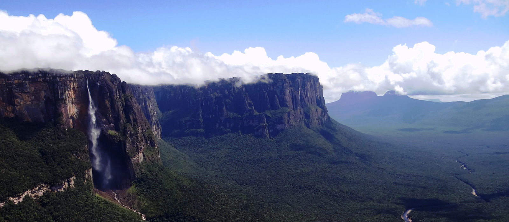
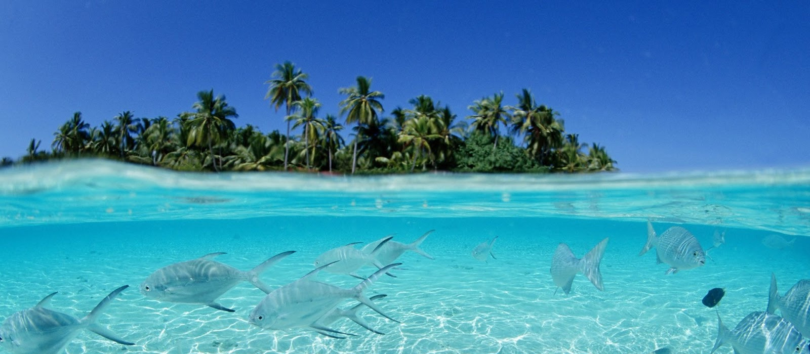
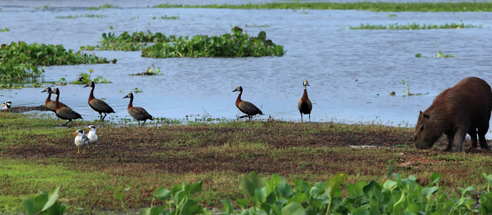
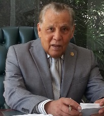

Esta página la iniciamos a partir del requerimiento de apoyo a los profesores y estudiantes de las asignaturas que integran las cátedras universitarias dedicadas a la investigación y el estudio de los elementos que se relacionan con los recursos naturales y todo el entorno de la naturaleza; la Educación para la Paz y el Derecho y la Justicia Militar de Venezuela. Sirve además como guía y orientación a los magistrados del Poder Judicial y a los abogados involucrados en esta materia jurídico-docente.
Recordamos que en un principio surgió este portal para reforzar la temática de la cátedra de DERECHO ECOLÓGICO que integra el pensum de estudios de la UNIVERSIDAD SANTA MARÍA -CARACAS-VENEZUELA- surgida desde 1984, que en un comienzo hubo la dificultad para profesores y alumnos, para encontrar material de estudio concatenado con la temática del programa propuesto desde entonces en la facultad de derecho de la Universidad. Con el tiempo, motivados los estudiosos han tenido que enfrentar la problemática ecológica que avanza en el planeta, y que ha obligado a a todos a incursionar en el análisis sistámico de la interrelación del hombre y su medio ambiente, guiado por los avances que desde hace ya bastante tiempo han tenido la ECOLOGÍA y las ciencias ecológicas en su función de estudiar la interrelación de los seres vivos y el medio ambiente en que coexisten.
Posteriormente, incluimos el material referido a las temáticas contenidas en las cátedras: Educación para la Paz en la Universidad Latinoamericana y del Caribe (ULAC); y El Derecho y La Justicia Militar en la Universidad Central de Venezuela (UCV).
Es por todo ello indiscutible el encuentro con la sociología, que coadyuva al estudio de la relación entre los grupos humanos y su ambiente, tanto físico como social. Con ello, el estudio de todas las complejas interrelaciones a las que Darwin se refería como las condiciones de lucha por la existencia.
En nuestro interés docente, seguimos abrigando la esperanza de que esta página se inserte en el espíritu de las muchas otras existentes a nivel planetario, como aporte al espíritu de la investigación y como una llama que busca el alimento oxigenante del conocimiento universal, que nos ayude a complementarla con aportes coincidente o críticas constructivas, para así, sin ánimo de éxito, sentirnos útiles al esfuerzo por la enseñanza y el desarrollo de estas innovadoras cátedras que hemos iniciados en Venezuela.
Honramos la palabra del Santo padre JUAN PABLO II, por ello, siguiendo el honor que conjugamos en nuestro libro: Derecho y Economía del Ambiente y de los Recursos Naturales, transcribimos su
El origen primigenio de todo lo que es un bien, es el acto mismo de Dios que ha creado al mundo y al hombre, y que ha dado la tierra para que la domine con su trabajo y goce de sus frutos (cf. Gen. 1 28-29). Dios ha dado la tierra a todo el género humano para que ella sustente a todos sus habitantes, sin excluir a nadie ni privilegiar a ninguno. He aquí, pues, la raíz primera del destino universal de los bienes de la tierra. Esta, por su misma fecundidad y capacidad de satisfacer las necesidades del hombre, es el primer don de Dios, para el sustento de la vida humana. Ahora bien, la tierra no da sus frutos sin una peculiar respuesta del hombre al don de Dios, es decir, sin el trabajo. Es mediante el trabajo como el hombre, usado su inteligencia y su libertad, logra dominar y hacer de ella su digna morada. De este modo, se apropia una parte de la tierra, la que ha conquistado con su trabajo: he aquí el origen de la propiedad individual. Obviamente, le incumbe también la responsabilidad de no impedir que otros hombres obtengan su parte del don de Dios, es mas, debe cooperar con ellos para dominar juntos la tierra... En efecto, el principal recurso del hombre es, junto con la tierra, el hombre mismo. Es su inteligencia la que descubre las potencialidades productivas de la tierra y las múltiples modalidades con que se pueden satisfacer las necesidades humanas. Es su trabajo disciplinado, en solidaria colaboración, el que permite que la creación de comunidades de trabajo cada vez más amplias y seguras para llevar a cabo la transformación del ambiente natural y la del mismo ambiente humano. En este proceso están comprometidas importantes virtudes, como son: la diligencia, la laboriosidad, la prudencia en asumir los riesgos razonables, la fiabilidad y la lealtad en las relaciones interpersonales, la resolución de ánimo en la ejecución de decisiones difíciles y dolorosas, pero necesarias para el trabajo común de la empresa y para hacer frente a los eventuales reveses de fortuna. (Parte de la Carta Encíclica Centesimus Annus del Sumo Pontífice JUAN PABLO II en el Centenario de la encíclica RERUM NOVARUM, Roma 1/5/91)



.
obtén Mis Libros Publicados

Soy natural de La Asunción, Edo. Nueva Esparta (Isla de Margarita) Venezuela, soy graduado de Maestro de Educación Primaria Rural de las escuelas normales rurales El Mácaro y Gervasio Rubio y ejercí la profesión durante cuatro años. Me gradué de oficial de la Guardia Nacional de Venezuela hasta alcanzar el máximo grado de General de División y cumplí el servicio durante 30 años; además de todos los cargos que corresponden a los diferentes grados ejercí la docencia en todos los institutos de formación y posgrados de la Guardia Nacional y algunos de las otras fuerzas. Mi último cargo fue de Comandante de Operaciones de la Guardia Nacional. Durante el tiempo en el servicio ejercicio como militar activo me gradué de abogado. En los últimos tres años de servicio ingrese como profesor en la Universidad Santa María, iniciándome con la creación de la cátedra de Derecho Ecológico aun me mantengo en su ejercicio con el escalafón de Profesor Titular y durante 20 años como Jefe de Cátedra. Me correspondió ser el integrador legislativo de esta catedra hoy universal, que bautice como "El Derecho del Milenio", igualmente, como integrador de la materia he publicado textos de estudio desde 1991 y hoy mantengo publicado en Amazon la 6ta Edición con el Título de "Derecho y Economía del Ambiente y de los Recursos Naturales -DERECHO ECOLÓGICO-"